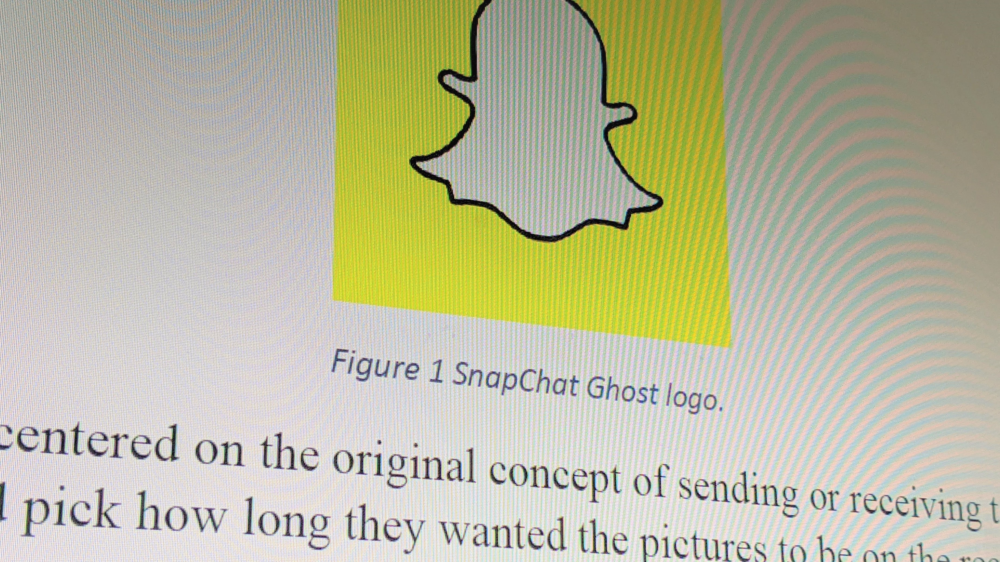

In August 2019 I started my Master in Digital Media. The classes have covered a lot of design thinking and theory, and many of my classes are mixed courses with Master’s and PhD students involved. That just goes to say we do a large amount of high-level reading and discussion, but all the courses are project based, so they benefit someone seeking to work outside academia.
The projects have a wide range and rather try to classify each one, I felt it would be easier to put some of my favorite projects from the program on this page and update it as I go along!
The self-coined “Thuba” came out of an idea to combine a tuba and a theremin, an instrument played based on distance to a sensor. Through the iterative process we centered on creating a group musical experience and built out this PVC robo fellow with 4 outward facing ultra-sonic sensors. Based on the distance of the musician’s hands the sensors play a tone. Our musically inclined group member set each to play in harmony with the other, so when people play around with it there is at least some form of pleasant mix of noise.
On this project I played key roles in ideation, managing the Arduino controllers, and the project documentation. I planned to link out to the website we created, however, unknown to me, Squarespace free doesn’t store your website for future use and removed all the photos. I still created a new page hosted on this site with the written documentation outlining our process and design statement found here for the curious.
As an expansion from another project, my group mate and I building out a physical controller as a companion for a p5.js game. We made modifications to an existing 3D sea turtle model and outfit a Tinyduino with an accelerometer which controls the sea turtle character in the game. The project timeline was cetnered around creating functioning prototypes, but we brainstormed a few stretch goals we could accomplish fi we had extra time. Goals such as, a button on the controller to start, better game design with prompts and score, lights on controller indicating the turtle ate 'good' or 'bad' food.
The turtle controller removes a layer of precision found earlier with a keyboard and mouse which creates a more immersive experience. The game centers around avoiding hazardous objects while eating healthy food, and the added difficulty from the controller delivers the message through better representation of the current challenges sea turtles face.
This project takes input from your microphone to generate a colorful display based on your input volume and frequency. I worked with one other group member as the coding lead for the project using HTML, CSS, JS and P5js.
The meaning behind this project is largely dependent upon the user’s input. To some it could simply be an abstract array of colors for purely aesthetic enjoyment, and others could visualize particularly meaningful sounds like I did above.
In my ethics studio we have been diving into ethical thinkers through the centuries, and one of our challenges involved selecting an artifact and analyzing it from various modes of ethics. While I don’t use social media as frequently as some of my peers, I was interested in what made SnapChat stand out compared to their competitor social media products, and the way the product is designed to be addictive as well as the effects on their userbase. Moving from those topics, I wanted to then discuss who was responsible for the negative effects such as poor self-image, depression, and increased FOMO (Fear of Missing Out) seen affecting many of their users based on the ethical models.
As part of a way to refresh our coding skills we did a web development camp before the semester started. We met each day for two weeks and at the end of each week we wrapped up a project.